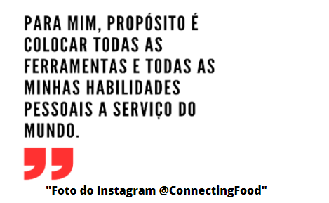

Anúncio

A empresa ConnectingFood vem inovando em sua forma de produzir alimentos. Menos desperdício e mais ajuda ao próximo.
A empresa trabalha com uma forma criativa, visando combater o desperdício de alimentos, trabalhando com empresas que buscam o mesmo objetivo. A ConnectingFood tem sido cada vez mais reconhecida e aprovada, tendo apoio de diversas empresas mundialmente famosas como o Ifood, Ekloos, Quintessa, etc.
PROFESSORES DE DIFERENTES ROTINAS FALAM SOBRE NOVA BOLSA FAMÍLIA
- Primeiramente precisamos entender o que é Bolsa Família. Além de garantir renda básica para as famílias em situação de pobreza, o Programa Bolsa Família busca integrar políticas públicas, fortalecendo o acesso das famílias a direitos básicos como saúde, educação e assistência social.
- Bolsa Família 2023: De acordo com informações do Ministério da Cidadania, em 2022 o programa atendeu 21,9 milhões de famílias em todo o Brasil. No acumulado desde o seu início, o Bolsa Família já beneficiou mais de 14 milhões de famílias em situação de vulnerabilidade social.
- Valor do Bolsa Família em 2023: Primeiro, vamos trazer os valores do Bolsa Família em 2023, que segue remunerando R$ 600 por família. A novidade é que, este ano, existe um pagamento adicional de R$ 150 por criança de até seis anos. A previsão é a de que, a partir de junho, o governo federal também pague R$ 50 por integrante entre 7 e 18 anos incompletos, além de gestantes cadastradas.
- De acordo com informações da Caixa Econômica Federal, a principal regra para ter direito ao Bolsa Família é que cada membro familiar tenha uma renda de, no máximo, R$ 218 por mês. Isso significa que, mesmo que um familiar receba um salário mínimo (R$ 1.302) em meio a uma família de seis pessoas sem renda, isso não inviabiliza o benefício, já que o que conta é a soma da renda de todos os integrantes.
- Realizamos uma pesquisa na escola técnica de ensino médio SENAC, entrevistando 2 professores de portes diferentes: Mulher com filho e Homem sem filho. Claro que o intuito da pesquisa era saber se achavam que o governo estava incentivando os brasileiros a procriarem ao invés de trabalharem mas surgiu um novo ponto sobre o valor dado por filho. Será que é suficiente 150 por filho com gastos tão extensos? Parece que à ajuda do governo é muito "superficial", ou seja quer ter aparência de boa ação, mas de ajuda não tem nada.
A
vida é tão diferente dos tempos atuais comparada a Idade Moderna?
Podemos analisar um ponto de vista diferente ao analisar as semelhanças da dificuldade das profissões da Idade Moderna e Contemporânea. Separando tópicos de profissões de ambas as partes : Navegadores, Cartógrafos, Mercadores, encontramos profissões da idade Contemporânea onde há muita semelhança nos problemas enfrentados. São eles trabalhadores digitais: Assim como os navegadores navegam em águas desconhecidas, o trabalhador digital enfrenta um mar desconhecido exatamente pela internet ser muito ampla. Analista de Dados: Cartógrafos e Analistas precisam ser muito precisos com dados, e transformar-los em informações úteis. Empresários e Comerciantes: Independente da época, contemporânea ou moderna os comerciantes e mercadores precisavam saber identificar oportunidades de negócios, gerenciar e até mesmo se adaptar com as inovações de mercado. Ao analisarmos essa profissões vemos que mesmo com diferenças de cenários, uma impacta muito na outra. Isso faz com que estejamos conectados com cada detalhe histórico, cada ato seu, ação, reação , trabalho, rotina , pode estar conectado com um resquício do passado.